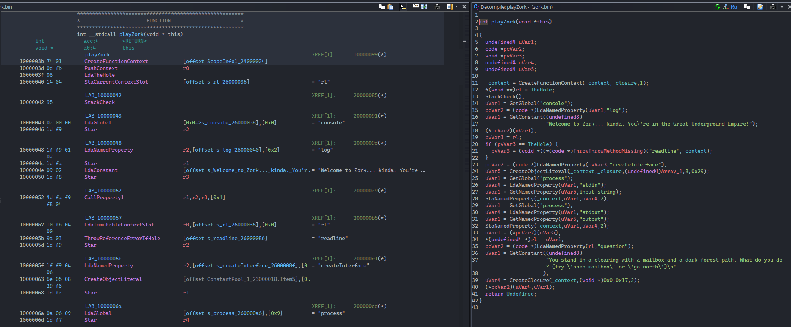
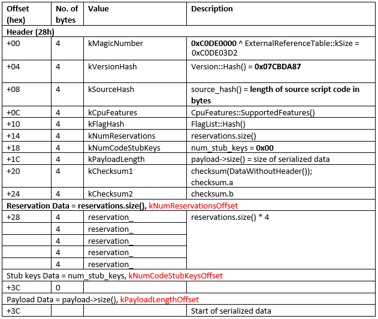

"I'm an intellectual rapist who enjoys exposing things people try to hide. Got it?" — Furudo Erika
Theia is a Ghidra extension that allows you to parse, disassemble, and decompile NW.js compiled (.bin) binaries.
"I gotta say, it's not the same without mint tea." — Sai Yomiya
Theia was developed for Ghidra v11.3.1 and has not been tested on other versions.
"You're just a voice, pal! You don't know a damn thing about racing!" — JP
git clone https://github.com/Llamaware/Theia.git"This is the will of Steins;Gate!" — Okabe Rintaro
After installation, you can now use Theia to disassemble binaries that have been compiled with nwjc. Follow any basic Ghidra usage guide and you should be on your way.
You can test Theia using the provided binaries in the /samples folder.
Theia currently supports NW.js v0.29.0 (x86). Other versions may be supported in the future, but none are planned at this time.
Current builds of Theia will write logs to your Ghidra directory such as loader.log, pcode.log, and cpool.log, for debugging purposes.
"OHHHHHHH YEAAAAAAAH! VERY GOOOOOOOD! One more!" — Furudo Erika
"Don't think about it too hard. You'll give yourself a headache." — Willard H. Wright
The .bin file consists of a header and serialized data. The header of the .bin file is virtually identical to the header of bytenode-compiled .jsc files and is described as follows.
[More info to come later...]
Modifying Theia to work with different version of NW.js is trivial and has been left as an exercise to the reader.
The scripts found in the /scripts directory of the repo will be helpful in this case.
"I just can't sit any other way than this. If I sit the way other people do, my reasoning ability drops by 40%." — L
Known issues:
If you encounter any other issues with Theia, feel free to open an issue on our GitHub repository.
"Illusions to illusions. The gold truth locks the lock of illusions." — Willard H. Wright
The NW.js developers claim:
"The JavaScript source code of your application can be protected by compiling to native code and loaded by NW.js. You only have to distribute the compiled code with your app for production."
Similarly, the developers of the RPG Maker MV/MZ Cook Tool claim:
"It allows RPG Maker MV and MZ game developers to protect the game's source code and plugins from being stolen by compiling the files to their binary form."
We find these claims to be dubious, to say the least. Relying on such tools to protect one's source code provides little more than a false sense of security. Compiling to native code or binary form may raise the bar for casual attempts at reverse engineering, but it ultimately amounts to nothing more than security through obscurity. Given the tools and expertise available today, reversing such "protections" is often just a matter of time and effort.
Anything that can be compiled can be decompiled, and anything that can be executed can be analyzed. To believe otherwise is to indulge in an illusion — and the harsh truth of reverse engineering is that no locked room remains closed forever."Legends are a thing of the past. I am a von Karma. That is all." — Franziska von Karma
Copyright (C) 2025 Llamaware
This program is free software: you can redistribute it and/or modify it under the terms of the GNU General Public License as published by the Free Software Foundation, either version 3 of the License, or (at your option) any later version.
This program is distributed in the hope that it will be useful, but WITHOUT ANY WARRANTY; without even the implied warranty of MERCHANTABILITY or FITNESS FOR A PARTICULAR PURPOSE. See the GNU General Public License for more details.
You should have received a copy of the GNU General Public License along with this program. If not, see https://www.gnu.org/licenses/.
"All according to plan." — Light Yagami
"I finally did it. The most high-quality video game rip. This is my magnum opus." — SiIvaGunner
peace to:
Positive Technologies
OpenAI o1
The NSA
basil.cafe
moggy.ai